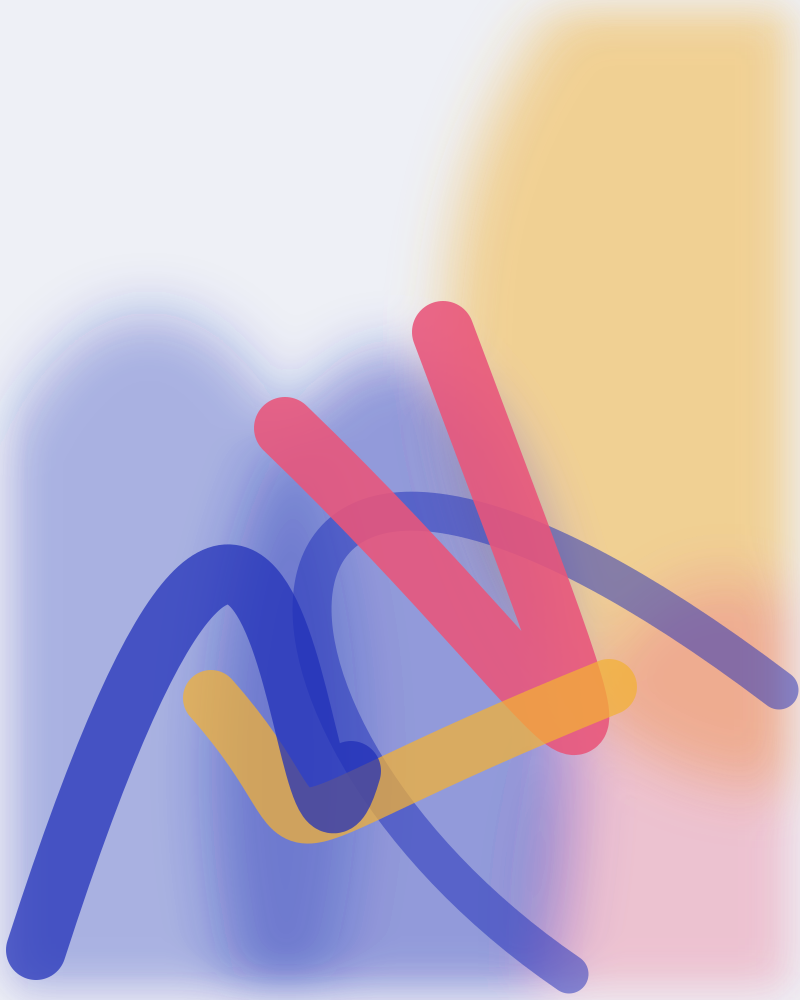

Über Charlotte
Begleiterin in Veränderungsprozessen, Künstlerin und Tänzerin.

Charlotte wurde in Frankreich geboren, lebt in Freiburg und hat in Lissabon eine zweite Heimat. Neben Deutsch, Französisch und Englisch sind Tanz und Malerei ihre Sprachen. Mit ihnen drückt sie sich aus, formuliert Visionen und verbindet sich über Grenzen hinweg.
„Das Bewusstsein dafür, dass wir unsere eigene Realität und unser Erleben selbst erschaffen, stellt für mich ein unheimliches Gestaltungspotenzial dar.“
Sie unterstützt Menschen dabei, ihren eigenen Weg zu gehen und sich frei und authentisch in die Welt zu bringen, mit Kreativität, Leichtigkeit und Tiefe.
Werdegang
Ausbildungen in Psychologie und Betriebswirtschaft, viele Jahre Erfahrung in Change-Beratung und Personalentwicklung, mit Organisationen jeder Größe im In- und Ausland.
Dazu kommen Weiterbildungen in hypnosystemischem Coaching, Generative Change, Konfliktklärung und Neuro Somatic Reprogramming sowie Einflüsse aus Tanz, Yoga und Achtsamkeit.
Wie Generative Painting entstand
Aus diesen Quellen entwickelte Charlotte ihren Ansatz: Malen als Ausdruck und als Werkzeug in Coaching und Organisationsentwicklung.